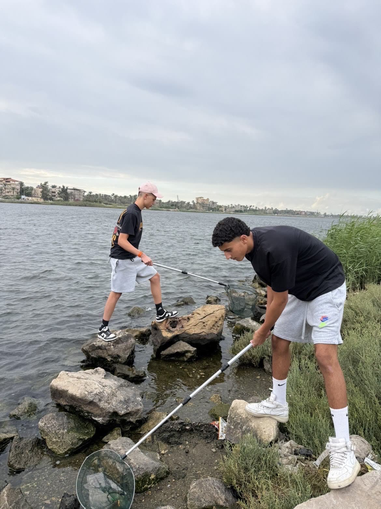

Cleaned the shore
We pulled snack wrappers, bags and plastic out of the water and from between the rocks.
🔬 Bags and wrappers are less dense than water, so they float to the edge, which is exactly where a clean-up can catch them before they reach the sea.